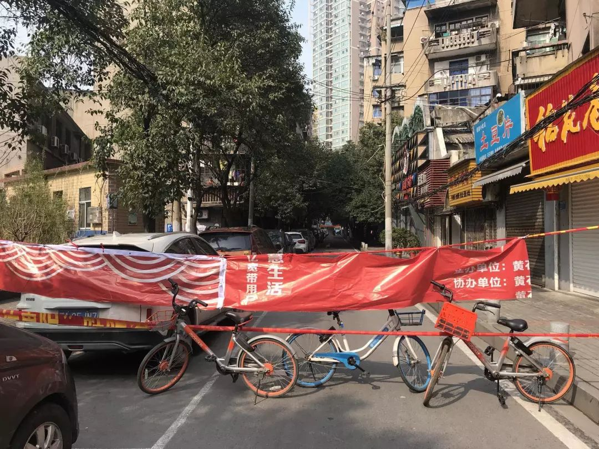
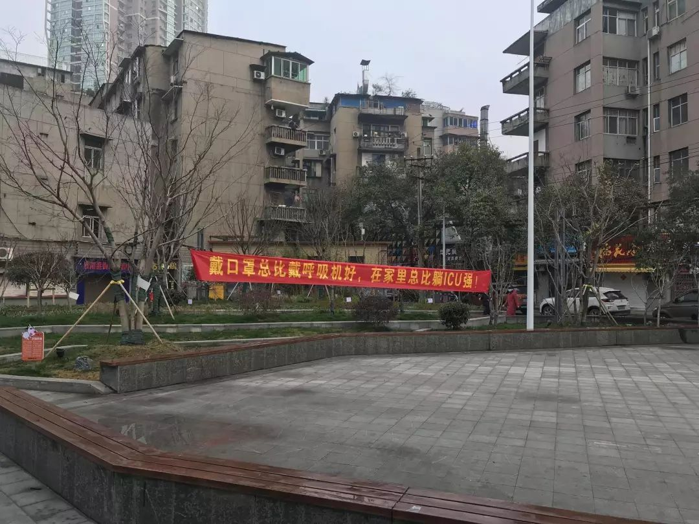
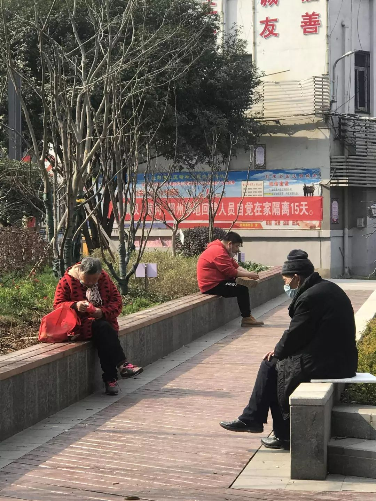
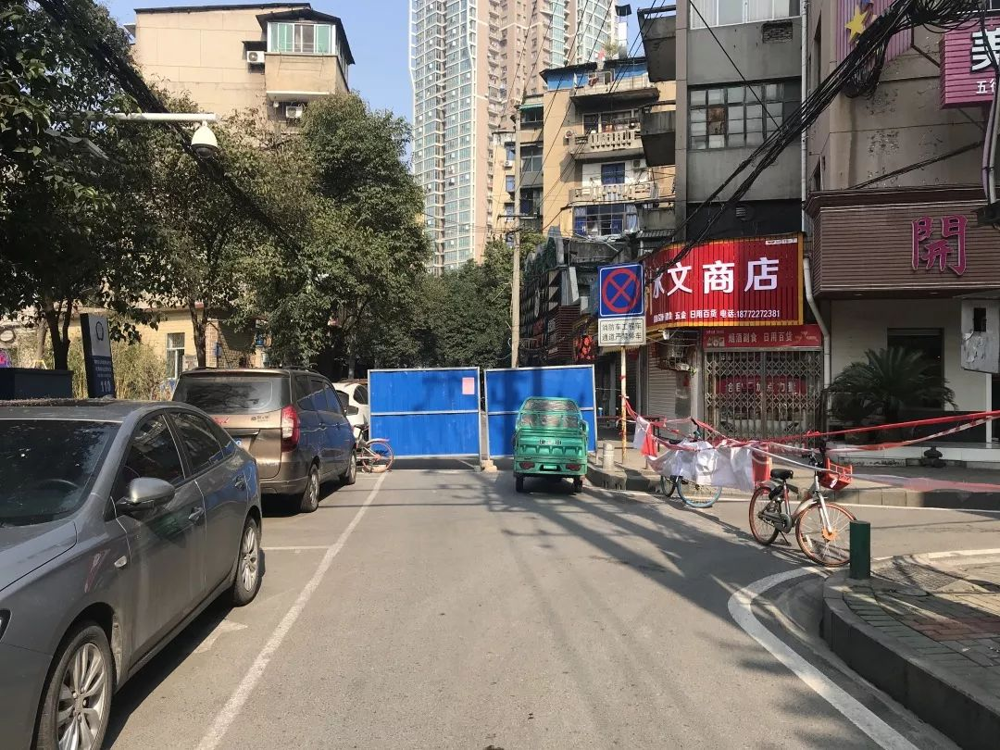

武汉“四类人员”集中收治第一日：“我们没有被抛弃！”_财经杂志的专栏文章_微信文章_今天看啥
原文链接 备份链接 在医学专家们看来，集中收留、隔离是第一步。接下来对疑似病患的确诊、分类诊治、收治入院，将是对医疗、物资、人员分配等多重资源配置能力的综合考验，相信各方面群策群力可以渡过难关 2月3号上午8点，人们在七医院门口排队等待核 …


对于封城后的武汉及周边地区的人们来说，社区的存在感从未如此强烈，“隔离”成了生活中绕不开的关键词。今天的“武汉日常”每日书中，三位作者向大家展现了生活在疫区的真实感受。确诊和疑似数据增长的背后，是紧缺的医疗资源，是充满紧张氛围的小区，是四处张贴的“重要通知”……当身处的社区中出现确诊案例后，每一个人都无法从中抽离。
**01
**
社区说，
没位置了，让回家隔离

作者：黄贝贝
坐标：武汉 汉口
职业：教师
这两天亲身经历了身边的一例病例，病况没到需要ICU的程度，但已经了解到如果目前得了病，你会遭遇到的是什么。很寒心，也很害怕。
这个人是朋友的前夫，感冒了几天，原本说好转了，前天突然发烧加呼吸困难。社区的车轮不到他用，让自己想办法，他骑半个小时车去了四医院西院区，CT的结果就是“磨玻璃”“双肺感染”“病毒性肺炎”，但是医生说没有盒子、不能确诊，所以他连疑似病例都算不上，只能回家隔离。
他是在妹妹家过年的时候发病的，自己也是不注意，这个时候了还聚集，家里连大人带小孩七八个人，已经传染了他爸爸。想把剩下的人送回武昌自己家里，武昌那边可能情况好点，医疗资源多一点，但是没有车。朋友想找我借车，我和老公开两台车出去，不接触，完了再开一台车回来。我想了好久，还是没敢借，心里很自责。
昨天听说社区开始隔离了，赶紧去排队，排了几个小时，社区说，没位置了，让回家隔离，不是说强制隔离的呢？有CT的结果都没用。社区的说法是，除非隔离点有人去医院占到了床位，或者有人死亡了，才能给安排。
武汉发的10号文中有四类人，第一类确诊病例，指的是有盒子又有床位的这批人；第二类疑似病例，指的是病的很重，先把你收进去，再用盒子检测的人；第三类发热病例，也就是我说的这种情况，CT照了不给确诊的这一批；第四类是确诊患者的密切接触者。其中，第三类人群说是让社区统一隔离，但各个社区的情况完全不同，武昌那边可能好些，起码能让隔离，和家里人分开，汉口这边不知道怎么回事，隔离点不够，难道不应该再找个酒店吗？
目前湖北所说的确诊数和疑似数，在这个之外，还有巨大的发热人群，做过了CT，感染了肺炎，但无法确诊的，这些人是根本没有统计在内的，这个数字会有多少？现在每个小区都对内公布了哪几栋有发热病例，但是一个社区总共有多少？全市所有社区加起来有多少？
看到外地不光发热病例、连跟病例接触过的人都实行严格隔离，武汉本地的，连发热的病例都收不进隔离点，让武汉人怎么想？面对这样的死亡率，对一些人来说，等死这两个字，我觉得可能不是夸张。
**02
**
社区里，
喇叭从早到晚响

作者：shanshan
坐标：湖北 宜昌
职业：市场策划
该来的事情总会发生，小区确诊的案例下来了，随之而来的除了一大堆疑似的患者，还有小区的全封锁以及出入的限制。社区里，从早到晚响了一天的喇叭，内容无非是从武汉归来的人员要报备、每天要测量体温在社群里告知网格员、以及重复多遍的不要出门。
“本小区从武汉归来人员已达50人，从傍晚开始，所有对外的出口，无论是人行道还是车库，都一律封闭。串门就是互相残杀，聚会就是自寻短见，如果需要买菜，每户家庭只能每2天派一名家庭成员进行采购。”虽说在小区封闭前，高度警觉的妈妈就已经不让全家人出门了，但真实的禁令出来后，心理上瘟疫的距离离我们更近了一步，反而刺激了全家人粮食不足的担忧。妈妈开始在各种群里盘问买菜之法，还通过社区群的推荐进了一个京东买菜群。
不一会儿，妈妈便踟蹰在客厅前后，一边扒拉手机询问小哥到哪儿了，一边在窗口四处张望，这模样颇像等待她的“如意郎君”。小哥姗姗来迟，妈妈隔着厚重的玻璃对他说，“我没有口罩就不出来了，你放在玻璃门口。我这就来把钱转给你。”
说罢便打开微信开始转账，嘴里还不停地念叨，“你确定是这么多钱对吧，119块5，哎呀这么贵，你看看收到了没有呀。”
待小哥离去1分钟之后，妈妈便小心谨慎的戴着做饭用的蓝色塑料薄头罩、口罩、墨镜，抿紧嘴巴，深呼一口气，去楼层外火速拿到了这个沉甸甸的“信物”，再立马关门、脱鞋、冲进厨房长呼一口气“憋死我了”。
还没来得及提醒她洗手，便见她开始咕叨，“这个怎么这么轻啊，我可是买了10斤面粉呢，你看看，这只有2.5千克，5斤，这是怎么回事？”电话里质问小哥，被告知超市价格有上涨，可是没来得及告知导致乌龙。
“真是郁闷，我来告诉邻居朋友们，这简直是坑我们老百姓。”
“解解气妈妈，这种时刻，有得面粉卖就知足了，换种角度想，明早能吃到美味的包子了！”
听罢我的安慰，她信心十足的拿出5斤面粉，“那可不是，你老妈做的红油包子是个顶个儿的好吃。”
于是，在晚上22点，给弟弟煮完一碗老坛酸菜泡面的夜宵后，拉上我，一块儿开始揉面，真是停不住的妈妈。
**03
**
社区工作人员,
用绳子和自行车隔离街道

作者：卡斯
坐标：湖北 黄石
职业：抖音编剧
奶奶年龄大了，加上昨天晚上睡觉前把枸杞、黄芪和红枣泡水喝，由于水没泡开，吃坏了肚子，半夜疼的起床吐了一地。
将我从睡梦中叫醒后，开始担心，这一特殊时期莫非……
主要是从宣布封城后，家里所有的医疗和日常生活物资都是我去采购，她在屋里待了至少十天，按理说不可能有机会接触传染源，除非是我。可是我出门的三次都戴的口罩，回到家中也是勤洗手和消毒，况且测试体温正常，身体也正常，除了相比过往更喜欢睡觉外没有任何异常。所以我推测奶奶患新型肺炎的机率较小。
和爸爸、姑姑商量出门买胃药和暖手袋，在中商平价里很多人在排队抢菜，大家做好继续蜗居，宅在家里坚持久战的准备。
还好我买的东西不多，可以直接扫描支付，拿了就走。
回来时发现有社区工作人员穿了防雨服当作隔离服，用绳子和自行车隔离了我们居住的胜阳港街道。

明令宣传出门戴口罩，但还是有人只做表面工作，在门口的小型广场坐着聊天。


不知道坐在这里取下口罩的人，有注意到旁边的宣传标语吗？戴口罩总比戴呼吸机好，在家总比躺ICU强。
无知和侥幸有多么可怕，可总有些人不当回事，病毒需要寻找宿主，没有人知道中招的会不会是自己。回家之前奶奶家旁边又新增一例确诊患者，两栋楼确诊两例，社区贴出通知，提示警告，并拉起警戒线提示隔离。


又过了几天，社区出入的路已经被铁板封死。


除了阳光以外，冷清的街道，除了防疫人员和社区工作人员外，已经没了任何动静。
晚上看到父亲发的新消息武商量贩有销售的营业员有三例显示已经确诊了新型肺炎病毒，武商量贩超市被迫关门。一旦有一家大型超市因出现感染病例关停营业，那意味着更多的人将蜂拥而至其他的超市对生活必须品进行抢购，也意味着二次传播，三次传播已经开始，处于疫区的人民生活将更加艰难。
但我们不怕，面对病毒这个看不见的敌人，我们当地政府决定晚间9:00-11:00进行全城消毒，这是史无前例的全城清消行动。奶奶说她活了八十多年也不曾见过。现在已无心愿，只盼好好活着，并希望大灾大疫过后我们除了以身作则外，国家能够花更多的精力，调配更多的资源研究病毒。


原文链接 备份链接 在医学专家们看来，集中收留、隔离是第一步。接下来对疑似病患的确诊、分类诊治、收治入院，将是对医疗、物资、人员分配等多重资源配置能力的综合考验，相信各方面群策群力可以渡过难关 2月3号上午8点，人们在七医院门口排队等待核 …
原文链接 备份链接 开启更有意思的武汉！请点击上方优良better →点击右上角“…” → “设为星标 ” 1月26日，湖北省人民政府新闻发布会上，武汉市长周先旺戴着口罩，疲惫地说出：“因春节因素和疫情因素，大约有500多万 …
原文链接 备份链接 这里是大学生的新媒体实验室 ∆ 再坚持几天，快了…… 轮到你了按： 这是摄影师蔡颖莉隔离在家的第8天。8天前，她与所供职的财新网7位记者抵达武汉新型冠状病毒疫情现场采访。在经历了14小时的一线拍摄后，被迫在武汉封城前撤 …
原文链接 备份链接 桐柏县中心医院 作者供图 作者李强 这次肺炎疫情爆发后，我在老家陆续出现了一些这场疫情中经常被提及的症状。 我的老家是河南省南阳市桐柏县，离武汉仅200多公里。2020年1月23日，农历猪年腊月二十九，我开始干咳、 …
原文链接 备份链接 2月3日，武汉市洪山区驿海柏曼酒店，医生袁红在查看一名疑似患者的肺部CT，并告知病患“您目前的感染情况不严重，不要害怕”。该酒店的医生会根据疑似病患此前在医院得到的诊断，对其作大致的病情判断，并提供抗病毒、退烧的口服 …